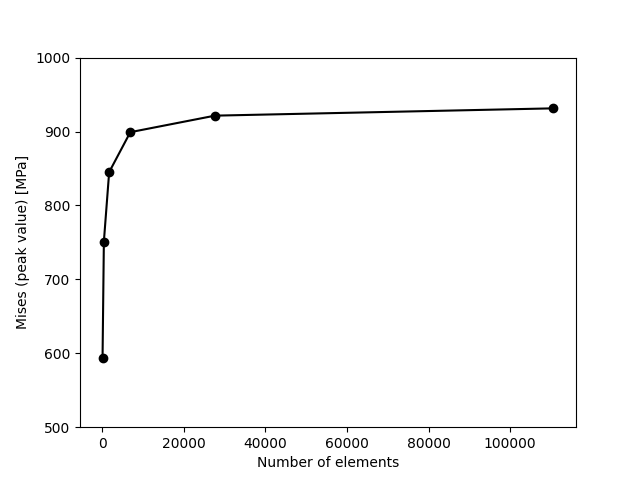

FEAPACK Examples
Advanced example #2: Incremental mesh refinement and mesh dependency analysis.
This example is an extension of advanced example #1. This time, instead of generating a single finite element mesh, multiple meshes with increasing refinement levels are generated. Finite element analyses are then performed considering each mesh in order to analyze any possible mesh dependency effect for the current problem. Additionally, the solver will be run in parallel mode, which is beneficial for larger meshes.
The FEAPACK files for this example can be found here.
Note 1: this example requires Gmsh for Python, which is not bundled with FEAPACK. To install Gmsh run: pip install gmsh.
Note 2: this example requires Matplotlib for Python, which is not bundled with FEAPACK. To install Matplotlib run: pip install matplotlib.
Solution via Gmsh and FEAPACK:
Start by creating a job script named advanced2.py and import the modules shown below. In this example, we will run the solver in parallel mode. For multiprocessing, the main guard is required:
import gmsh
import feapack.gmsh
import feapack.model
import feapack.solver
import matplotlib.pyplot as plt
# main guard required for multiprocessing
if __name__ == '__main__':
We then use Gmsh to define the geometry and to generate a very basic finite element mesh. The mesh is then incrementally refined, and each version is saved to a file:
#-----------------------------------------------------------
# CREATING THE MESH WITH GMSH
#-----------------------------------------------------------
# initialize Gmsh
gmsh.initialize()
# points
p1 = gmsh.model.geo.addPoint( 0.0, 0.0, 0.0)
p2 = gmsh.model.geo.addPoint( 20.0, 0.0, 0.0)
p3 = gmsh.model.geo.addPoint( 0.0, 20.0, 0.0)
p4 = gmsh.model.geo.addPoint( 0.0, 50.0, 0.0)
p5 = gmsh.model.geo.addPoint(100.0, 50.0, 0.0)
p6 = gmsh.model.geo.addPoint(100.0, 0.0, 0.0)
# curves
c1 = gmsh.model.geo.addCircleArc(p2, p1, p3)
c2 = gmsh.model.geo.addLine(p3, p4)
c3 = gmsh.model.geo.addLine(p4, p5)
c4 = gmsh.model.geo.addLine(p5, p6)
c5 = gmsh.model.geo.addLine(p6, p2)
# surfaces
l1 = gmsh.model.geo.addCurveLoop([c1, c2, c3, c4, c5])
s1 = gmsh.model.geo.addPlaneSurface([l1])
# geometry done
gmsh.model.geo.synchronize()
# create Gmsh physical groups that will become FEAPACK sets
# by default, Gmsh only saves elements associated with a physical group
# hence, a physical group specifying the domain is generally required
gmsh.model.addPhysicalGroup(2, [s1], name='PG-DOMAIN') # contains the whole domain (a 2D surface)
gmsh.model.addPhysicalGroup(1, [c2], name='PG-X-SYM') # contains the edge for the x-symmetry boundary condition (a 1D curve)
gmsh.model.addPhysicalGroup(1, [c5], name='PG-Y-SYM') # contains the edge for the y-symmetry boundary condition (a 1D curve)
gmsh.model.addPhysicalGroup(1, [c4], name='PG-LOAD') # contains the edge for the load application (a 1D curve)
# write options
gmsh.option.setNumber('Mesh.SaveAll', False) # default (also works with True, but more unused elements are saved)
gmsh.option.setNumber('Mesh.SaveGroupsOfNodes', True) # to save node sets
# generate and save initial 2D mesh
gmsh.model.mesh.generate(2)
gmsh.write('advanced2_0.inp')
# refine and save additional 2D meshes
for i in range(5):
gmsh.model.mesh.refine()
gmsh.write(f'advanced2_{i + 1}.inp')
# finalize Gmsh
gmsh.finalize()
Generated meshes:
We then use FEAPACK, as shown below, to create a model database (MDB) for each mesh and to perform the finite element analyses.
As discussed in the previous example, because the Abaqus mesh input files were generated via Gmsh, the feapack.gmsh.clean function is required, as shown below.
#-----------------------------------------------------------
# FINITE ELEMENT ANALYSIS WITH FEAPACK
#-----------------------------------------------------------
# for each mesh
for i in range(6):
# create model database (MDB)
feapack.gmsh.clean(f'advanced2_{i}.inp') # required if inp file is generated by Gmsh
mdb = feapack.model.MDB.fromFile(f'advanced2_{i}.inp')
# print available sets
print('Node sets:', *mdb.nodeSets.keys()) # Node sets: PG-X-SYM PG-Y-SYM PG-LOAD PG-DOMAIN
print('Element sets:', *mdb.elementSets.keys()) # Element sets: PG-DOMAIN
# create surface set
mdb.surfaceSet(name='LOAD-SURFACE', surfaceNodes='PG-LOAD')
# create material and section
mdb.material(name='AL', young=70000.0, poisson=0.3)
mdb.section(
name='AL-SECTION',
region='PG-DOMAIN',
material='AL',
type=feapack.model.SectionTypes.PlaneStress, # or simply 'PlaneStress'
thickness=10.0,
reducedIntegration=False
)
# create load
mdb.surfaceTraction(name='TENSION', region='LOAD-SURFACE', x=250.0)
# boundary conditions
mdb.boundaryCondition(name='X-SYM', region='PG-X-SYM', u=0.0)
mdb.boundaryCondition(name='Y-SYM', region='PG-Y-SYM', v=0.0)
# call solver inside main guard
feapack.solver.solve(mdb, analysis='static', jobName=f'advanced2_{i}', processes=8)
# after the loop, merge relevant frames into a single output file
print('Merging output files...')
feapack.model.ODB.merge(
filePath='advanced2.out',
selection=(
('advanced2_0.out', [1]), # select frame 1 from 'advanced2_0.out'
('advanced2_1.out', [1]), # select frame 1 from 'advanced2_1.out'
('advanced2_2.out', [1]), # select frame 1 from 'advanced2_2.out'
('advanced2_3.out', [1]), # select frame 1 from 'advanced2_3.out'
('advanced2_4.out', [1]), # select frame 1 from 'advanced2_4.out'
('advanced2_5.out', [1]), # select frame 1 from 'advanced2_5.out'
),
descriptions=[f'Mesh Refinement Level: {i}' for i in range(6)],
deleteExisting=True
)
print('Done')
Notice that the jobName parameter is specified in the call to the solver. Otherwise, the output file would be replaced within each iteration of the loop, and we would lose the results from the previous iteration. Additionally, after all the output files have been successfully created, the relevant output frames are merged into a single output file via the feapack.model.ODB.merge function, as shown above.
After the finite element analyses and the creation of a final output file containing the relevant output frames, the following code is used to generated a plot showing the convergence of the peak value of equivalent Mises stress as the number of finite elements increases:
#-----------------------------------------------------------
# FINAL CONVERGENCE PLOT
#-----------------------------------------------------------
# get plot data
count = []
stress = []
odb = feapack.model.ODB('advanced2.out', mode='read') # open ODB in read-only mode
for frame in range(odb.frameCount): # loop for each frame in the ODB
odb.goToFrame(frame) # update internal file pointers to the specified frame
mesh = feapack.model.Mesh(nodes=odb.getNodes(), elements=odb.getElements()) # load mesh for the current frame
mises = [*odb.getNodeOutputValues('Stress>Equivalent Mises Stress')] # unpack Mises nodal output field into a list
count.append(mesh.elementCount) # save current number of elements
stress.append(max(mises)) # save current peak Mises stress
# plot Mises convergence
plt.figure()
plt.xlabel('Number of elements')
plt.ylabel('Mises (peak value) [MPa]')
plt.ylim((500.0, 1000.0))
plt.plot(count, stress, '-ok')
plt.savefig('advanced2.png')
The resulting plot is shown below, showing that results are mesh-dependent, but they converge as the mesh gets increasingly more refined. This phenomenon is common within the finite element method.
Additionally, using the viewer application, the following animation is generated, showing how results are mesh-dependent: